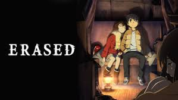

Nous sommes en 2006. Satoru Fujinuma est un mangaka qui n'arrive pas à faire décoller sa carrière. Pour arrondir ses fins de mois, il travaille comme livreur de pizza. Réservé, Satoru ne s'ouvre pas au monde qui l'entoure. Pourtant, il a la capacité de revenir quelques minutes en arrière avant qu'un accident ne se produise.
Un jour, à la suite d'un événement soudain, Satoru est ramené 18 ans auparavant, quand il était encore à l'école primaire, lui donnant ainsi la possibilité d'arrêter un criminel qui avait enlevé et assassiné trois de ses camarades.
Source 